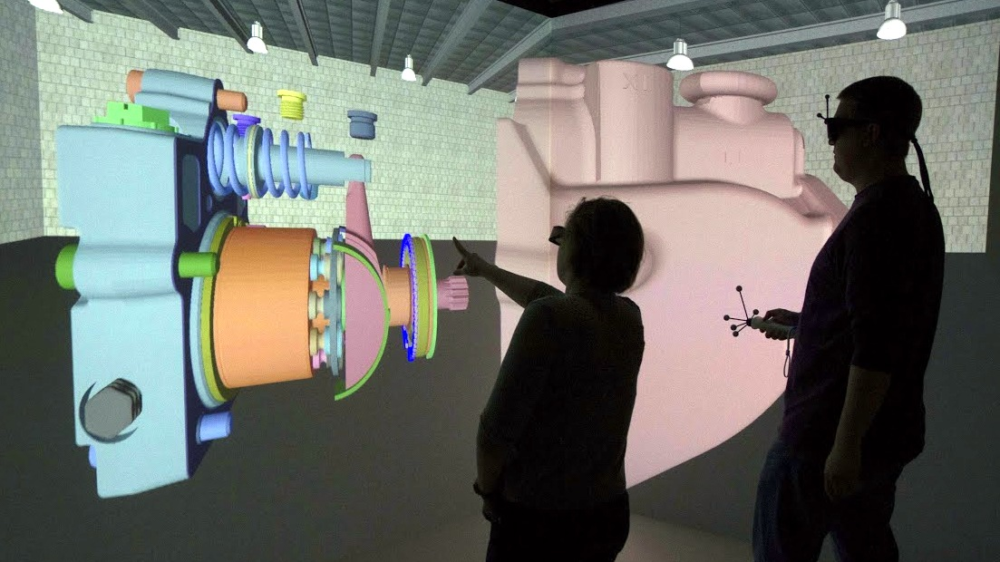
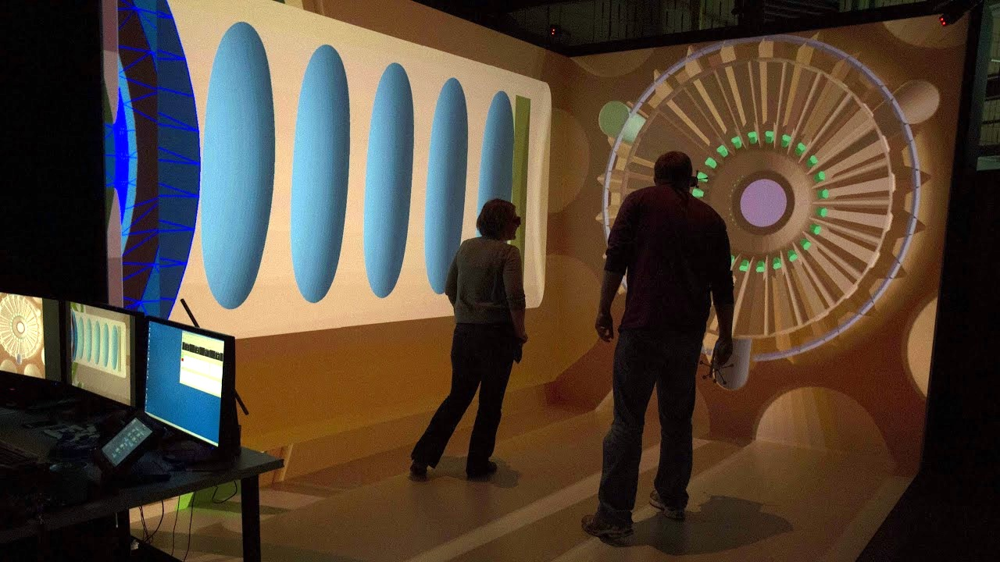

Research
Enhanced Immersive Technology to Improve Collaborative Decision Making
Funded by the National Science Foundation, research explored new design methodology combining analytic tools for design decision making and immersive, sensory environments to support complex design. Iowa State University. 2011-2015.
 Capstone Research Project: Image Compression
Directed a team of students in the design and implementation of an image compression algorithm in Python. Researched existing literature to establish goal benchmarks. Final design compressed image data by exploiting polygon mesh connectivity utilizing a special segmentation method. St. Olaf College. Fall 2009.
Sociotechnical Analysis of Regents Hall
Conceptualized prospective human-computer interactions within the Regents Hall of Natural Science at St. Olaf College. Surveyed collaborative spaces to identify potential interaction issues. Observed and interviewed potential users to influence future space alterations. Presented findings and recommendations to the building's design team. St. Olaf College. Spring 2008.